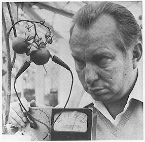

Propheteering business
Martin Gardner
Nature, 14 January 1988, p. 125
Bare-Faced Messiah: The True Story of L. Ron Hubbard. By Russell
Miller. Michael Joseph, London: 1987. Pp. 390. £12.95. To be
published in the United States by Henry Holt.
L. Ron Hubbard: Messiah or Madman? By Bent Corydon and L. Ron
Hubbard, Jr. Lyle, Stuart 120 Enterprise Avenue, Secaucus, New Jersey
07094: 1987. Pp. 402. $20.
|
For 35 years I believed that L. Ron Hubbard, founder of Scientology, was no
more than a writer of mediocre fiction who, lusting for power and money,
became one of the world's most successful mountebanks. Russell Miller's
admirable, meticulously documented biography has persuaded me otherwise.
Hubbard was a deeply disturbed man -- a pathological liar who steadily
deteriorated from a charming rogue into a paranoid egomaniac "unable to
distinguish", as Miller puts it, "between fact and his own fantastic fiction".
Almost everything Ron ever said about himself was false. He was never a
swashbuckling explorer or distinguished naval officer. Although he claimed to
be a physicist, his knowledge of science was negligible. His father, a
lieutenant-commander in the US Navy, had hoped his son would pursue a similar
career, but near-sightedness kept Ron out of Annapolis. His only education was
in the engineering school of George Washington University where he dropped out
after two years of dismal grades.
During the ten years preceding the Second World War, Ron became one of the
nation's most industrious contributors to western, mystery and adventure pulp
fiction. His four years in the wartime Navy are summed up in a fitness report
saying he "lacked essential qualities of leadership . . . not considered
qualified for command or promotion" The closest he came to combat was while in
command of a submarine chaser. On its shakedown cruise Hubbard mistook a
magnetic deposit for submarines, and his battle against the non-existent enemy
cost him his command. Assigned to a ship on its way to a war zone, he at once
applied for and obtained transfer to a school at Princeton. "Far from being a
hero", Miller concludes, "Hubbard was a malingering coward who had done his
best to avoid seeing action".
Ron's record as husband, father and bigamist was even more deplorable. He
deserted his first wife, Polly Grubb, and their two children to marry Sara
Northrup. They mey in the 'temple' of Jack Parsons, an addlepated Californian
chemical-propulsion expert who secretly practised black magic. A firm believer
in witchcraft, Parsons had become a devoted disciple of England's 'Beast 666',
the notorious satanist Aleister Crowley. Hubbard, Parsons informed his
'Blessed Father', was a kindred spirit eager to assist in blasphemous rituals.
Ron left the temple with Parsons's young mistress Sara. A few years later,
Parsons blew himself to Hades by accidentally dropping a phial of
nitroglycerin. His mother, hearing the news, killed herself with sleeping
pills.
Hubbard's bigamous marriage to Sara, which produced a daughter, lasted five
years. Polly of course divorced him. In Sara's later divorce action he was
said to be "hopelessly insane". In 1952, aged 41, Hubbard married Mary Sue
Whipp, 19, by whom he had four more offspring. When their son Quentin
committed suicide Hubbard's only reaction was one of fury.
It was while Ron was hacking out science fiction that he conceived of
dianetics. In this hilarious parody of psychoanalysis, ills are said to spring
from 'engrams' recorded on an embryo's brain by what it overhears even before
it develops ears. After engrams have been erased by 'auditing', one becomes a
'clear', with perfect memory and robust health. The new science was released
to the world in a rousing article by Hubbard in Astounding Science
Fiction, quickly followed by his book Dianetics. The ludicrous
therapy exploded into a national craze.
Hubbard discovered that a crude lie detector he called an E-meter was a
valuable auditing tool. With its aid, 'preclears' were soon recalling not only
birth traumas but previous lives. Ron saw at once that by combining dianetics
with reincarnation he could fabricate an exotic 'religion' capable of raking
in millions of tax-free dollars. The Church of Scientology began with
recruitment of naive youngsters who really believed Ron had found a 'bridge'
to transcendent realities that would transform the world. The bridge grew more
baroque as dozens of new books by Ron improved the 'tech' (auditing
technology) and elaborated the mythology.
Hubbard began to annoy the FBI with wild reports of Communist persecution.
The Bureau considered him psychotic. On the estate of the Maharajah of Jaipur
|

|
|
Sensitive salad -- Hubbard goes to work on a tomato.
|
in Sussex, which Hubbard had purchased, he conducted plant research to "reform
the world's food supply". E-meters convinced him that tomatoes scream when
sliced. Mary Sue learned she had once been D. H. Lawrence. Ron revealed he had
written The Prince but "that son-of-a-bitch Machiavelli stole it from
me". During an incarnation on another planet, Hubbard said, he had managed a
factory that made steel humanoids.
Harassed by real and fancied enemies, Hubbard sought escape by buying three
ships. From his flagship Apollo, resplendent in officer's uniform, he
became the naval commander his father had wanted him to be. Pubescent little
girls in mini-skirts and high-heeled boots transmitted the 'Commodore's'
orders, lit his cigarettes, washed his hair, dressed and undressed him.
Hubbard's temper tantrums, abusive language and dictatorial behaviour grew
more perverse. A young woman aboard shot herself to death.
For years Hubbard's Sea Org, as he called his fleet, wandered around the
eastern Atlantic, its Commodore convinced that Nazis and Reds were chasing
him. Crude slapstick efforts were made to take over Rhodesia and Morocco. A
proof that Hubbard -- now fat, flabby-faced and impotent, with hair to his
shoulders and rotting teeth -- had come to believe his mythology is that his
crew wasted months searching for treasures he recalled having buried in
earlier incarnations.
Operation Snow White was Hubbard's secret plan to infiltrate federal
offices and steal material related to his church. The plan was carried out by
loyal Scientologists firmly convinced they were obeying higher laws. In 1977
FBI agents broke into two of Hubbard's headquarters and carted off 48,149
documents. Mary Sue and eight others were convicted, fined and incarcerated.
Ron escaped punishment because no one could find him. For a while he hid
out in a Nevada desert where, with no previous experience, he struggled to
make fantasy films. The Church was ordered to allocate "unlimited funds" for a
campaign to get their leader a Nobel prize. Mary Sue was released after a year
in prison, a pathetic woman who to this day, perhaps out of fear, will not
talk about the man who abandoned her.
Hubbard seems to have spent most of his hidden years churning out more
science fiction. St Martin's published his 800-page Battlefield Earth.
Ten even more worthless novels have since been issued by the Church and
lavishly advertised. After promoting himself to Admiral, his red hair now
white, Hubbard apparently died in Creston, California, on January 24, 1986. He
had been living in a motor home parked on a ranch he had recently bought.
This is only the barest sketch of the sordid details in Miller's incredible
account. An even more savaging life of Hubbard, by his oldest son in
collaboration with another scientologist who "blew the Org", has just been
published in the United States. It is carelessly written, poorly organized and
documented, with neither bibliography nor index. It does, however, have a
useful glossary of Scientology's major neologisms, and a chilling chapter on
the cult's heartless efforts to destroy Paulette Cooper for writing The
Scandal of Scientology.
I finished the two books with double amazement. How could a man this crazy
have lived to 74 without being committed? How could a science-fiction cult,
with such preposterous doctrines and evil morals, continue to flourish?
Idiotic religions, I suppose, like old soldiers never die, and centuries can
pass before they finally fade.
Martin Gardner, a science writer, is author of Science: Good, Bad,
and Bogus, The Whys of a Philosophical Scrivener and many other books on
science, pseudoscience and mathematics.